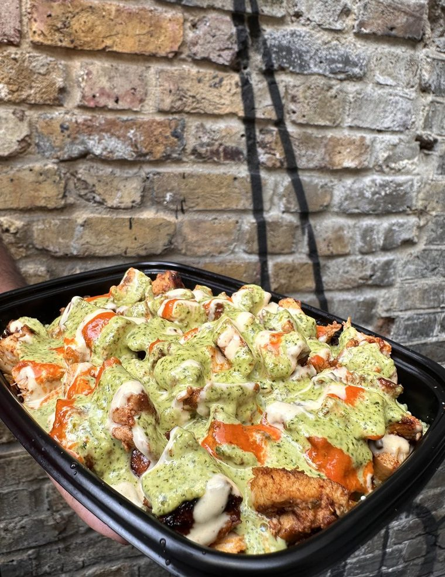

Peruvian Street Kitchen
2025 –
Peruvian chicken and rice, built around a green sauce I spent months failing to recreate. My brother runs it now.
- 16failed attempts at the sauce
- 3 hrsto sell out the first drop
- 1sauce worth all of it
What I say about it now, and what I was actually posting at the time.
There was a lunch place near the office in my Goldman days that I could not stop thinking about, years after I stopped working there. The whole business exists because of a sauce I could not reverse engineer.
There's this lunch from my Goldman days I can't get out of my head. After 16 failed attempts, I finally nailed the green sauce that had senior bankers queuing in Savile Row suits. Here's why I spent 2 months obsessing over chicken: There was this Peruvian place near our…
Read on XSimply Smashed meant entering a market with a smashed burger place on every corner and trying to be better than all of them. This was the opposite problem. Nobody was asking for it, so the job was to make people want a thing they had never had.
I'm building @PSK_UKI because I want to bring some new flavours to the halal food scene with simply smashed it was about entering a saturated market (smashed burgers everywhere) and trying to rise above with peruvian street kitchen it's about introducing something new & fresh!
Read on XProud to announce our newest food brand @PSK_UKI I’m building the most addictive chicken and rice box in the city. Slow-cooked Peruvian grilled chicken with our super addictive green sauce. Think Shah’s Halal but Peruvian. Peruvian Street Kitchen launches October 2025.
Read on XTwo months of obsession between the first box and the one we actually launched with. That gap is the whole job and nobody sees it.
Left photo: Our first PSK box. Leftover chicken and rice. Right photo: What 2 months of obsession creates. Most founders would hide that first photo. But here's what tech taught me that most restaurants don't understand: You can't iterate on an idea. You can only iterate on something that exists.…
Read on LinkedInFirst look of Peruvian Street Kitchen!

Read on XWe ran a stealth test before opening properly. Someone spent £100 trying to sabotage it, which I took as a compliment. A dad tried to buy from us five times in one week and we were shut every time.
Someone spent £100 trying to sabotage my stealth launch. And honestly? It's hilarious. So we're quietly testing PSK (Peruvian Street Kitchen). Not advertising. Just fulfilling random orders. Day 1: This guy orders from Simply Smashed. We go all out - extra portions, made with love, the works. Check…
Read on LinkedInA dad tried to buy chicken and rice from me 5 times in one week. We were closed every single time. His son had spotted PSK on my Twitter. Said it was "better than Shah's and Pepe's." In their house, that's high praise. See, this father and son talk about everything. Football. Work. Life. But…
Read on LinkedInRunning burgers and rice boxes out of one kitchen was chaos, and I found that out the way I find most things out.
Running burgers and rice boxes from the same kitchen is absolute chaos. Found that out the hard way yesterday. PSK's first pop-up. Simply Smashed still firing orders. Two brands, one kitchen, complete madness at 2pm. We opened an hour late. People waited. Nobody left. Once we found our flow though?…
Read on LinkedInLately
- 8 Jul 2026 I was building an AI company between burger orders and honestly I miss it. I keep looking at this photo and it's kinda crazy.… 92
- 4 Apr 2026 Peruvian Street Kitchen Stepney has launched on UberEats Our second @PSK_UKI branch now live! People are loving it already الحمد لله 13
- 23 Jan 2026 I've left Simply Smashed. After 2 years of building the highest rated burger joint in London, I'm stepping back. My brother's… 513
- 3 Nov 2025 PSK pop up was amazing! Overstocked but we still sold out an hour before closing Love hearing everyone’s feedback and it’s only… 17
- 31 Oct 2025 had a dad try to buy chicken and rice from me 5 times in one week. we were closed every single time. his son had spotted PSK on… 90
- 30 Oct 2025 whats been crazy is psk hitting every demographic tastebuds from the asian mothers who usually hate takeaways to the takeaway teen… 3
- 30 Oct 2025 latest PSK patch: - fried onions garnished on top - diced salad - chunkier, better grill crust on our peruvian chicken we're… 1
- 30 Oct 2025 I abandoned my restaurant mid-service to bike across London while my kitchen was on fire. "Just sell chicken burgers until I get… 26